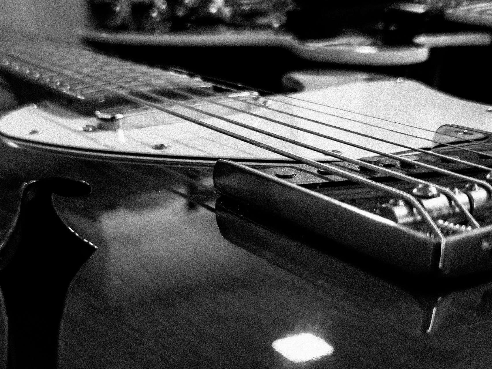
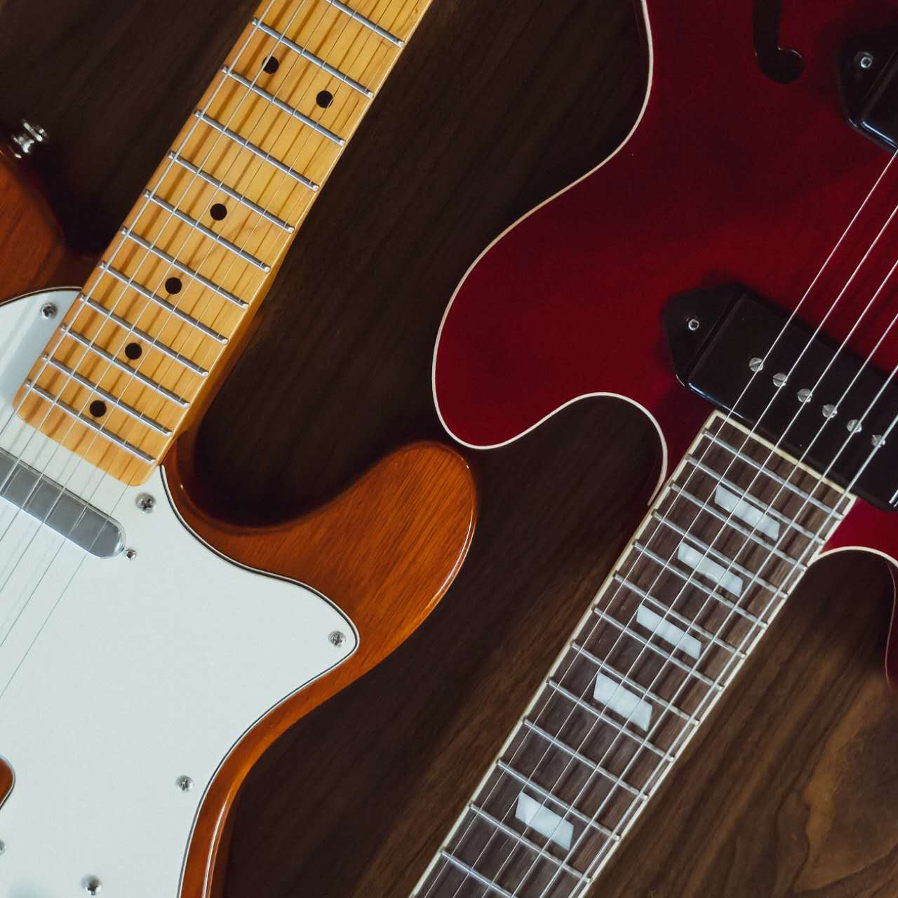
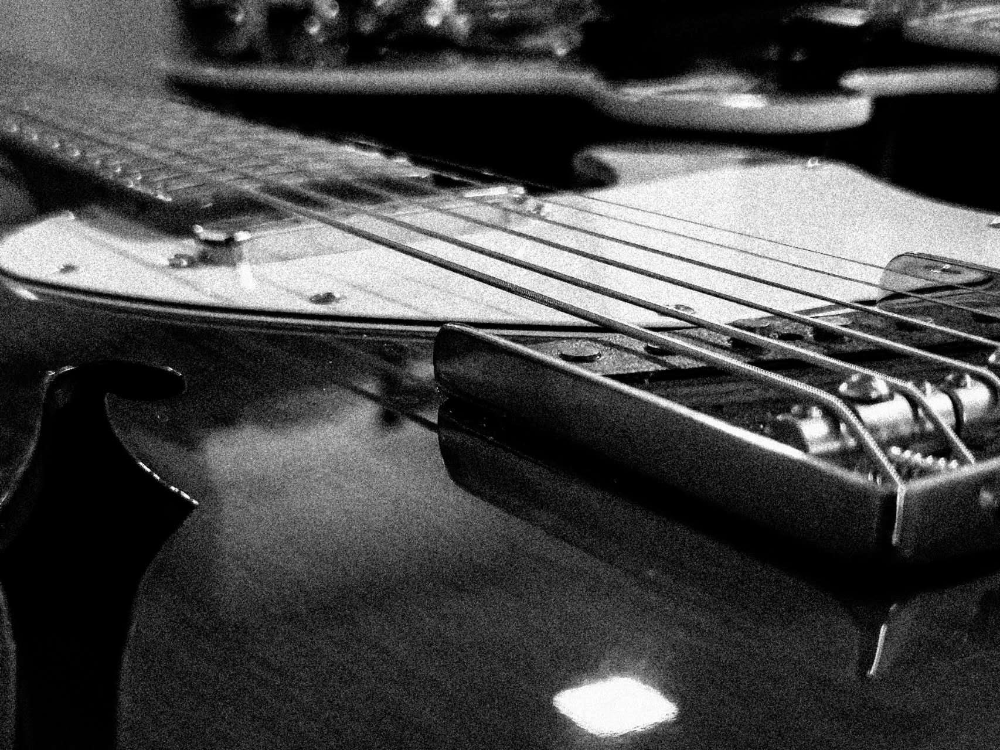
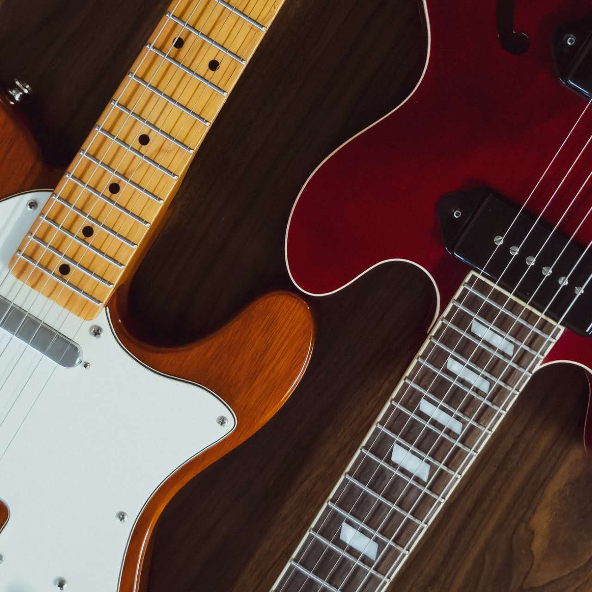

History of Electric Guitar
The electric guitar, an iconic instrument in modern music, traces its origins back to the early 20th century. The quest to amplify the guitar began in the 1920s, when musicians sought a way to be heard over the louder brass and woodwind instruments in big bands. Early attempts involved attaching a resonator to the guitar to increase its volume. However, these efforts fell short of providing the necessary amplification. The breakthrough came in the 1930s when George Beauchamp, an employee of the National String Instrument Corporation, collaborated with Adolph Rickenbacker to develop the first commercially successful electric guitar. This prototype, known as the "Frying Pan" due to its circular body and long neck, used a magnetic pickup to convert string vibrations into electrical signals, which could then be amplified through a speaker.

The electric guitar gained widespread popularity in the 1950s with the introduction of two landmark models: the Fender Telecaster and the Gibson Les Paul. Leo Fender's Telecaster, launched in 1950, was the first mass-produced solid-body electric guitar, known for its bright, cutting tone and simple, rugged design. Following this, Gibson introduced the Les Paul in 1952, named after the renowned guitarist and inventor Les Paul, who had been experimenting with his own solid-body designs. The Les Paul featured a thicker, more sustain-friendly body and humbucker pickups, which provided a warmer, fatter sound compared to single-coil pickups. These innovations set the stage for the electric guitar's dominance in genres like rock, blues, and jazz, and established it as a symbol of musical innovation and cultural revolution.
Some Guitar Masters
Jimi Hendrix
1942-1970
Jimmy Page
1944 - today
Eric Clapton
1945 - today
Jimi Hendrix, born Johnny Allen Hendrix on November 27, 1942, in Seattle, Washington, is widely regarded as one of the most influential electric guitarists in the history of popular music. Hendrix's innovative style of playing, characterized by his use of feedback, distortion, and an extensive vocabulary of guitar techniques, revolutionized the rock genre.

He began his career as a session musician before forming his own band, The Jimi Hendrix Experience, in 1966. With this band, Hendrix released groundbreaking albums such as "Are You Experienced" and "Electric Ladyland," which showcased his exceptional talent and creativity. His performance at the Monterey Pop Festival in 1967, where he famously set his guitar on fire, and his rendition of "The Star-Spangled Banner" at Woodstock in 1969, solidified his status as a legendary performer.

Jimmy Page, born January 9, 1944, in Heston, England, is a legendary guitarist best known as the founder and lead guitarist of the rock band Led Zeppelin. Renowned for his innovative guitar techniques and iconic riffs, Page has profoundly influenced rock music and is celebrated as one of the greatest guitarists of all time.

Eric Clapton, born March 30, 1945, in Ripley, England, is a legendary guitarist and singer-songwriter known for his work with bands like The Yardbirds, Cream, and his solo career. Nicknamed "Slowhand," Clapton's blues-influenced playing and soulful voice have made him one of the most influential and celebrated musicians in rock history.
I and My Guitars
 



To be honest, I'm not a good guitar player despite playing guitar for five years, but I have very nice guitars. These are my guitars.